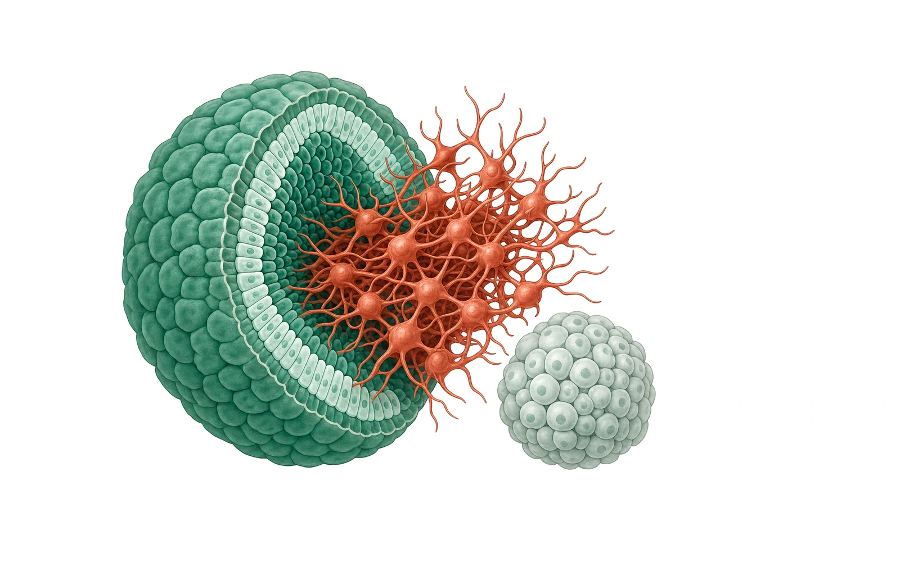
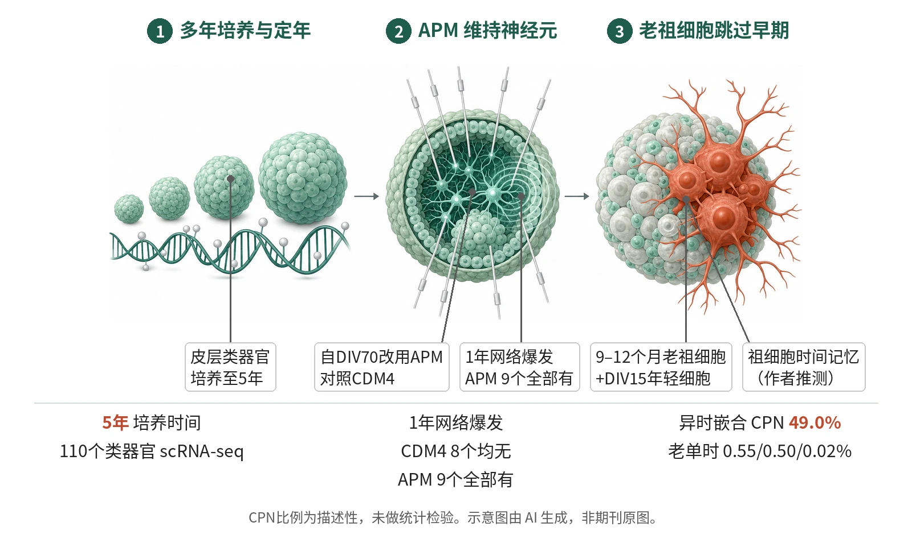

封面示意：剖开的绿色类器官，切面浮现砖红色神经元。图片由 AI 生成，非原文图片。
人脑皮层类器官培养至5年，Horvath与皮层甲基化时钟预测年龄与培养时间相关（r = 0.88–0.90，中位绝对误差7.25与20.04个月）。

- 培养皮层类器官至5年，转录组与甲基化定年
- 自DIV70改用APM，1年时仍有网络爆发
- 老祖细胞与DIV15年轻细胞共聚集
- 老源后代中CPN占49.0%
人脑皮层类器官培养至5年，以转录组与甲基化时钟定年；自DIV70改用APM后，1年时类器官仍保留网络爆发；老祖细胞与年轻细胞共聚集后产生晚期CPN。示意图由 AI 生成，依据原文结果绘制，非期刊原图，不代表分子比例
研究背景与待解问题
人脑发育与成熟历时近二十年，出生后阶段的人类特异过程难以在动物模型中研究。人脑类器官提供了体外模型，但既有类器官大多只重现早期发育；此前一项研究将类器官培养至694天，仅用整体类器官的bulk RNA-seq和甲基化芯片分析。
不同细胞类型的长期存活能力差异明显，神经元尤其如此；除细胞存在外，还需确认神经元结构与环路活动能否在多年培养中保留。本研究将皮层类器官培养超过5年，整合单细胞转录组、全基因组甲基化、结构和功能数据，并用嵌合类器官检验祖细胞是否保留所经历时间的“记忆”。
研究设计
这是一项临床前类器官研究，无预设主要终点，也没有按组间比较设计效能或预先计算样本量，亦未设盲。皮层类器官由多株人多能干细胞（如H1、11a、PGP1）按作者既往方案生成。WGBS覆盖3个月至5年的9个时间点。嵌合实验混合9–12个月老祖细胞与DIV15年轻细胞。
scRNA-seq时间序列自15天至5年，含110个单个类器官（34个新数据、76个既往数据）、424,720个细胞，经标签转移映射到人胎儿与出生后皮层参考数据。自DIV70起改用活动许可培养基（APM，BrainPhys加GlutaMax），对照为常规CDM4，读出含电镜与3D多电极阵列（MEA）。
核心结果
转录组对应人脑发育阶段
转录层面，15天至2个月的类器官对应第一孕期胎脑，3至6个月主要对应第二孕期，9个月至5年逐步偏向晚期产前和出生后，出生后样特征在12个月后出现。DIALOGUE成熟模块MCP1–5与培养时间的Pearson r依次为−0.08、0.78、0.35、0.78和−0.72，其中MCP4被用作成熟评分。
甲基化时钟与培养时间相关
在表观遗传层面，WGBS覆盖3个月至5年的9个时间点。Horvath泛组织时钟与皮层特异时钟预测的DNAm年龄与培养时间密切相关（r = 0.88–0.90），中位绝对误差分别为7.25和20.04个月；胎儿脑时钟仅呈正向但未达显著的相关（r = 0.54，P = 0.056）。solo-WCGW位点甲基化保持稳定，提示这些变化不主要由细胞增殖驱动。
APM保留神经元与突触
常规CDM4下神经元比例随培养下降，5年样本仅余101个细胞的小型混合神经元簇。自DIV70改用APM后，9个月时SATB2+细胞增多（各9个类器官，LMM P = 2.4×10−5）。电镜显示6个月时突触密度无差异（P = 0.7），1年时APM更高（P = 0.002）；位于棘突上的突触占比为25%（CDM4）对52%（APM）（Fisher P = 9.5×10−8）。
成熟评分与网络活动
兴奋性神经元成熟评分在APM中总体更高（单侧F检验，P = 4.03×10−2）；分时间点，4个月P = 1.56×10−3，6个月P = 9.77×10−1，1年P = 3.86×10−6。3D MEA记录显示，1年时8个CDM4类器官无一出现网络爆发，9个APM类器官全部出现；2年的APM类器官仍有爆发，并可识别至少两个神经元亚群。
老祖细胞跳过早期命运
在人异时嵌合类器官中，9–12个月老祖细胞的后代中CPN占49.0%，而老单时嵌合的三个重复为0.55%、0.50%和0.02%（第3个为11个月），9个月标准类器官为1.1%；重新聚集后约2周内即产生。SATB2免疫染色比较三组（各n = 3），Kruskal–Wallis P = 0.0519，未达显著。
机制解读
原文实验证明：转录成熟评分、甲基化时钟年龄与培养时间的相关性由实验直接测得，属相关性证据。APM组在9个月时SATB2+细胞增多，1年时突触密度与棘突突触占比升高，并保留网络爆发；活动是否为因果中介，本研究未用干预实验检验。
异时嵌合实验直接显示：老祖细胞与年轻细胞共聚集后，其成熟评分低于老单时培养的祖细胞，后代CPN占49.0%，而同一嵌合体内年轻来源细胞只产生早期细胞类型。这提示老祖细胞可响应年轻细胞的诱导信号。
作者推测：作者推测，老祖细胞保留了对已完成发育步骤的“记忆”，接触早期诱导信号时仍跳过早期后代，直接产生通常需培养数月的兴奋性神经元。作者还推测，促进自发活动有利于神经元存活与成熟，加入感觉诱发活动和非神经组织等体内因素可能进一步改善类器官。
局限与不确定
- CDM4下5年样本仅余101个细胞的小型混合神经元簇，未能细分；1年后染色特异性下降，抗体解读受限，2至3年样本需改用新鲜冷冻方案；异时嵌合成功率很低。
- 1.5年每组仅n = 2，60个月scRNA-seq仅n = 2，样本量未预先计算；MEA中CDM4类器官在记录前2周才换入APM，两组培养史并不一致。
- 9个月成熟评分差异P = 5.88×10−2，正文却称除6个月外均显著；SATB2三组比较P = 0.0519；胎脑时钟P = 0.056；皮层时钟中位绝对误差20.04个月；49.0%与对照间未做检验。
- 结果均来自体外类器官，未与出生后人脑组织做直接功能比对，外推到体内成熟需谨慎。
临床/产业意义
若这些结果能在更多供体和更大样本中重复，长期培养的类器官可能成为研究人类出生后皮层成熟的体外平台，并用于检验时间记录机制。APM作为培养条件，可能为需要保持兴奋性神经元的长期实验提供参考。
祖细胞时间记忆的结果提示，类器官可借异时嵌合设计探测命运潜能，但目前这只是体外观察。作者还提到，进一步整合感觉诱发活动与非神经组织，是改进类器官的方向。目前没有涉及患者或治疗终点的数据。